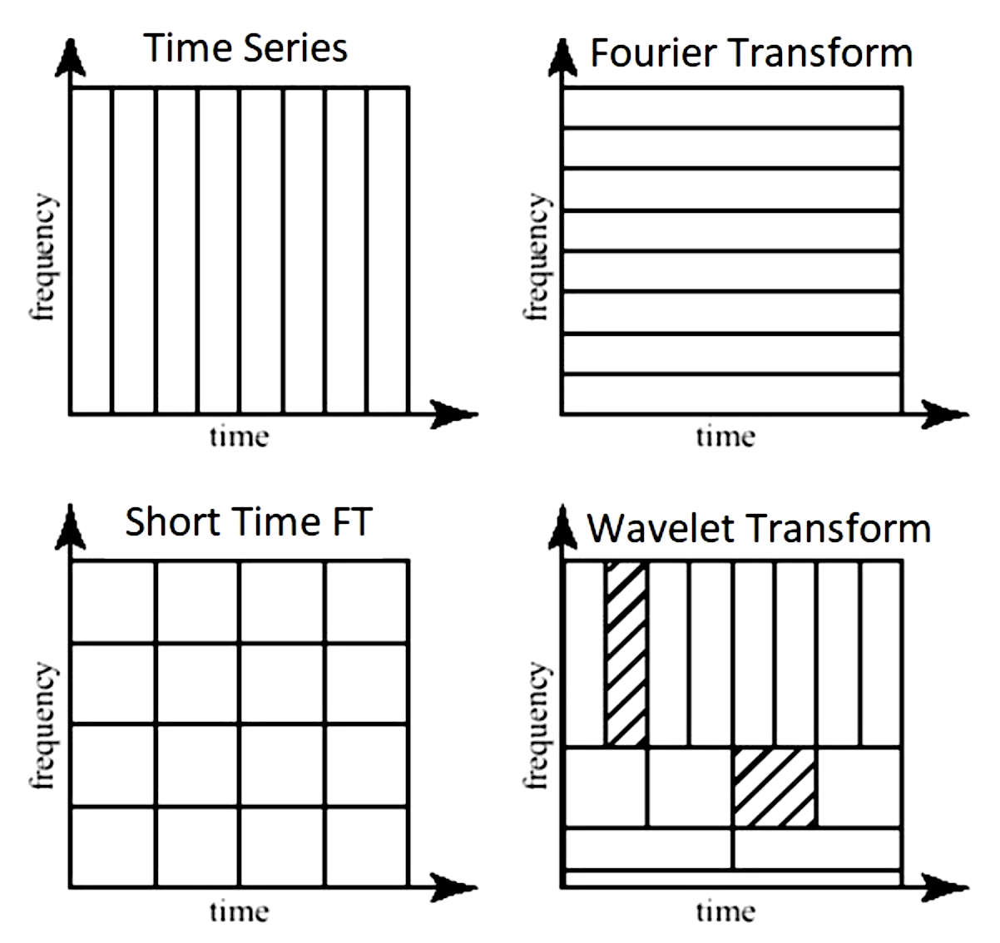
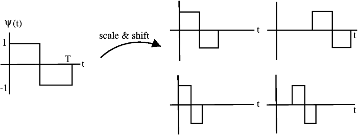

3.5. signals¶
3.5.1. basics¶
dirac-delta infinity at one point, zero everywhere else

3.5.2. intro¶
signal can be continuous or discrete based on its domain (not values)
analog signal - continuous in time
sampling - the process of taking individual values of a continuous-time signal
sampling rate \(f_s\) - the number of samples taken per second (Hz)
sampling period - time interval between samples
digital signal - discrete in time and value
”If a function x(t) contains no frequencies higher than B hertz, it is completely determined by giving its ordinates at a series of points spaced 1 2B seconds apart” –Shannon
signals are usually studied in
time-domain (with respect to time)
frequency-domain (with respect to frequency) - use Fourier transform
time-frequency representation (TFR) - use short-time Fourier transform (STFT) or wavelets
harmonic analysis - studies relationship between time and frequency domain
common filters
low-pass filter - pass only low frequencies
high-pass filter - pass only high frequencies
band-pass filter - pass only frequencies within a specified range
band-stop filter - pass only frequences outside a specified range
power spectrum - how much of the signal is at a frequency \(\omega\)? - square of the magnitude of the coefficients of the Fourier coefficients for \(\omega\)

3.5.3. fourier analysis¶
Fourier analysis - study of way general functions can be represented by Fourier series
Fourier series - periodic function composed of harmonically related sinusoids, combined by a weighted summation
one period of the summation can approximate an arbitrary function in that interval
(continuous) Fourier transform \(\hat f\): time (x) -> frequency (u)
\(\hat{f}(u) = \int_{-\infty}^{\infty} f(x)\ e^{-2\pi i x u}\,dx\)
\(f(x) = \int_{-\infty}^{\infty} \hat f(u)\ e^{2\pi i x u} \,du\)
2-dimensional (good ref)
\(F(u, v) = \int_{-\infty}^{\infty} \int_{-\infty}^{\infty} f(x, y) e^{-i 2 \pi (ux + vy)}\,dx\, dy\)
inverse: \(f(x,y) = \int_{-\infty}^{\infty} \int_{-\infty}^{\infty} F(u, v) e^{i 2 \pi (ux + vy)}\,du\, dv\)
for each basis, magnitude of vector [u, v] is frequency and direction gives orientation
Fourier transform of Gaussian is Gaussian
discrete-time Fourier transform - values are still continuous
\(X_{2\pi}(\omega) = \sum_{n=-\infty}^{\infty} x_n \,e^{-i \omega n}\)
\(\omega\) is frequency
discrete Fourier transform (DFT or the analysis equation) - this is by far the most common
\(\begin{align}X_k &= \sum_{n=0}^{N-1} x_n e^{-2\pi i k n / N}\\&=\sum_{n=0}^{N-1} x_n \left[ \cos(2\pi k \frac n N ) - i \sin(2 \pi k \frac n N )\right]\end{align}\)
larger k is higher freq.
inverse transform: \(x_n = \frac{1}{N} \sum_{k=0}^{N-1} X_k\cdot e^{i 2 \pi k n / N}\)
\(x_0, x_1, ... x_{N-1}\) is a sequence of N complex numbers (i.e. time domain) and we transform to another sequence of complex numbers \(X_0, X_1, ..., X_{N-1}\)
we write \(\mathbf X = \mathcal F (\mathbf x)\)
vectors \(u_k = \left[\left. e^{ \frac{i 2\pi}{N} kn} \;\right|\; n=0,1,\ldots,N-1 \right]^\mathsf{T}\) form an orthogonal basis over the set of N-dimensional complex vectors
interpreting units
a frequency of 1/N would correspond to a period of N
use \(2\pi/N\) so that it goes through one cycle with period of N
the n=0 parts correspond to a constant
all other frequencies are integer multiples of the first fundamental frequency
finding coefs: basically want to use the correlation between the signal and the basis element (this is what the summation and muliptlying does)
real part - corresponds to even part of the signal (the cosines)
imaginary part - corresponds to odd parts of the signal
can be quickly computed using the Fast Fourier Transform in \(O(n \log n)\) instead of \(O(n^2)\)
inverse discrete Fourier Transform (IDFT)
windowed fourier transform - chop signal into sections and analyze each section separately
3.5.4. wavelet analysis¶
wavelet is localized in both time and frequency information
different wavelets thus vary in translation, scale, and sometimes orientation
many choices for wavelet basis, which replaces the sinusoid basis sinusoid \(\phi(x) = e^{i 2 \pi k x/N}\)
3.5.4.1. wavelet basics¶
\(\phi(x)\) = mother wavelet (or analyzing wavelet)
basis consists of translations and dilations of the mother wavelet \(\phi(\frac{x-b}{a})\)
wavelet vocab
discrete wavelet transform: set \(a=2^{-j}, b = k \cdot 2^{-j}\), where \(k\) and \(j\) are integers
starts from multiresolution analysis (mallat, 1989)
continuous wavelet transform: \(a > 0, b\) (still a point-by-point, digita transformation)
orthonormal
biorthogonal - more relaxed, still enables perfect reconstruction
undecimated - highly overparameterized, exists at every location
website to explore different wavelets
ex. Haar wavelet (step function on [0, 1]

define translations and dilations \(\phi_{jk}(x) = \text{const} \cdot \phi(2^j x - k)\)
j, k are still integers
this is still orthogonal
ex. Gabor==Morlet wavelet: \(\phi_\sigma(x) = c \cdot \underbrace{e^{-\frac 1 2 x^2}}_{\text{gaussian window}} \underbrace{(e^{i\sigma x} - \kappa_\sigma)}_{\text{frequency}}\)
ex. Mexican hat wavelet - 2nd deriv of Gaussian pdf (in 2d, called Laplacian of Gaussian)
ex. Daubechies wavelet
ex. coiflet
ex. scattering transform
ex. Mallat’s MRA - stretch/scale wavelets in a smart way to tile space
how are wavelets implemented? (figs taken from blog)
note: Continuous Wavelet Transform, (CWT), and the Discrete Wavelet Transform (DWT), are both, point-by-point, digital, transformations that are easily implemented on a computer
DWT restricts the value of the scale and translation of the wavelets (e.g. scale must increase in powers of 2 and translation must be integer)

The approximation coefficients represent the output of the low pass filter (averaging filter) of the DWT.
The detail coefficients represent the output of the high pass filter (difference filter) of the DWT
pywt 2d can decompose in different ways

wavelet packet uses linear combinations of wavelets
3.5.4.2. properties of different wavelet bases¶
vanishing moments
higher number of vanishing moments = more complex wavelet
more accurate repr. of complex signal
longer support
p vanishing moments => polynomials up to pth order will not be identified
regularity
more vanishing moments = higher regularity
low regularity - more jagged wavelets, less smooth reconstructions
invertibility
requires admissibility condition, which at least requires wavelets have vanishing mean \(\int \psi(x) \mathrm{d} x=0\)
3.5.4.3. wavelet analysis¶
orthogonal wavelet basis: \(\phi_{(s,l)} (x) = 2^{-s/2} \phi (2^{-s} x-l)\)
scaling function \(W(x) = \sum_{k=-1}^{N-2} (-1)^k c_{k+1} \phi (2x+k)\) where \(\sum_{k=0,N-1} c_k=2, \: \sum_{k=0}^{N-1} c_k c_{k+2l} = 2 \delta_{l,0}\)
one pattern of coefficients is smoothing and another brings out detail = called quadrature mirror filter pair
there is also a fast discrete wavelet transform (Mallat)
basis of adapted waveform - best basis function for a given signal representation
differential operator and capable of being tuned to act at any desired scale